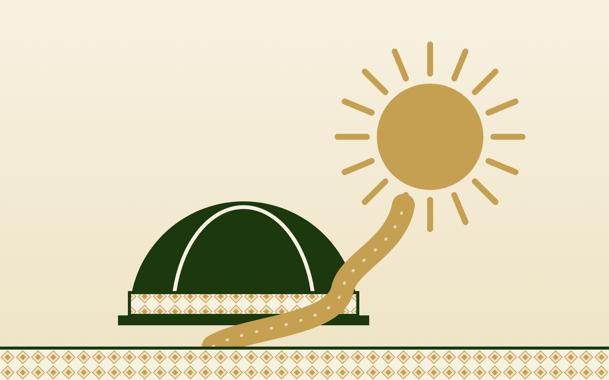
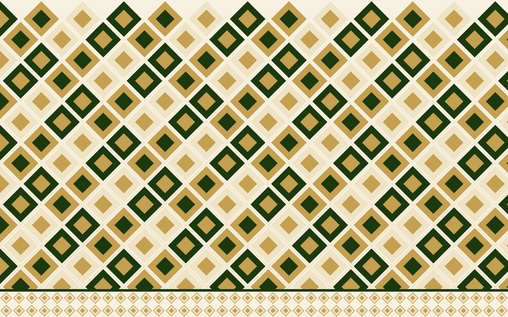
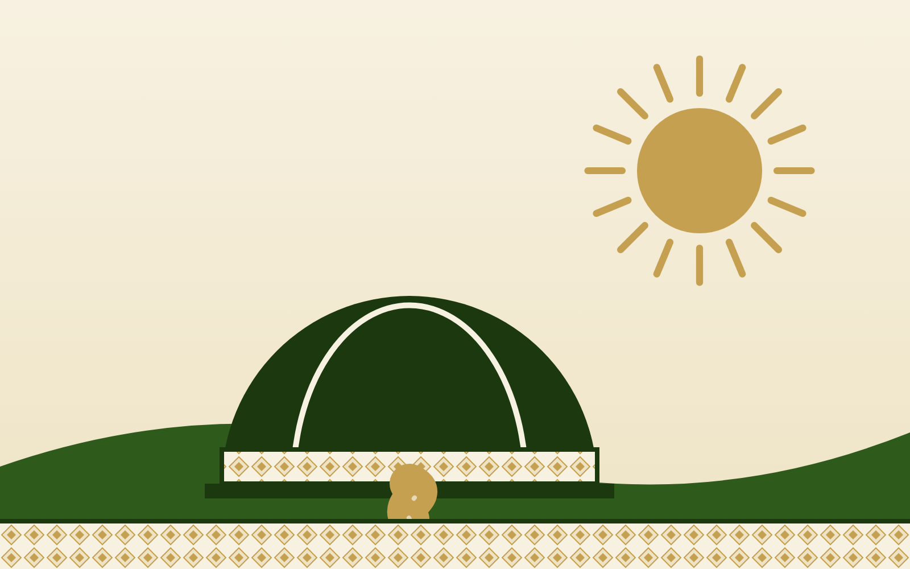

Narok County, Kenya
Empowering
Women,
Sustaining
Futures

01
Women Economic Empowerment
02
Education and Mentorship
03
Girls' Dignity and Health

04
Vulnerable Households
05
Community Development
Lasting change starts at the grassroots.
Communities name their own problems and lead their own solutions.
Enkaji Enkitati CBO
Donate
Partner with us
enkajienkitaticbo.org